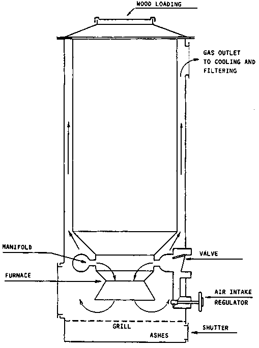
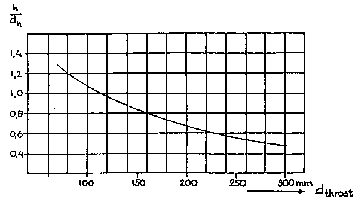
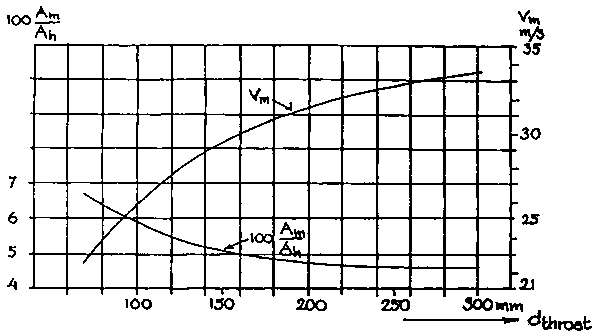
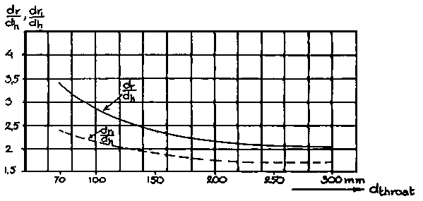
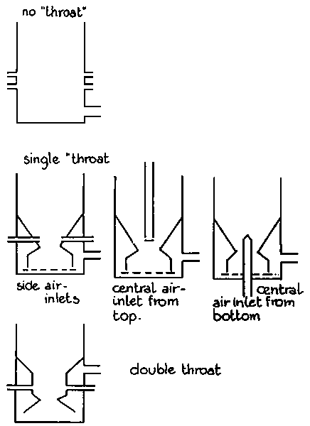

2.5.1 Processes occurring in the down-draught gasifier
2.5.2 Design guidelines for downdraught gasifiers
The downdraught gasifier makes it possible to use wood as fuel and produce a gas with sufficiently low tar content to operate an internal combustion engine. There are other means of handling the tar problem but these may create their own problems. Fox example, use of charcoal as fuel involves a loss of energy and increases the risk of depletion of wood resources. Use of cleaning systems after the gasifier involves difficult waste disposal problems.
Down-draught gasifiers being comparatively easy to build and operate, are likely to be the most appropriate for developing countries as a source of decentralized power supply to rural communities and industries.
The conversion of solid fuel to gas in a down-draught gasifier and the design basis for such gasifiers will therefore be examined in more detail.
In the down-draught gasifier, schematically illustrated in Fig. 2.8, the fuel is introduced at the top, the air is normally introduced at some intermediate level and the gas is taken out at the bottom.
It is possible to distinguish four separate zones in the gasifier, each of which is characterized by one important step in the process of converting the fuel to a combustible gas. The processes in these four zones are examined below and the design basis will be discussed in the following section.
a) Bunker Section (drying zone)Solid fuel is introduced into the gasifier at the top. It is not necessary to use complex fuel-feeding equipment, because a small amount of air leakage can be tolerated at this spot. As a result of heat transfer from the lower parts of the gasifier, drying of the wood or biomass fuel occurs in the bunker section.
The water vapour will flow downwards and add to the water vapour formed in the oxidation zone. Part of it may be reduced to hydrogen (see equation (b), paragraph 2.2) and the rest will end up as moisture in the gas.
b) Pyrolysis Zone
At temperatures above 250°C, the biomass fuel starts pyrolysing. The details of these pyrolysis reactions are not well known, but one can surmise that large molecules (such as cellulose, hemi-cellulose and lignin) break down into medium size molecules and carbon (char) during the heating of the feedstock. The pyrolysis products flow downwards into the hotter zones of the gasifier. Some will be burned in the oxidation zone, and the rest will break down to even smaller molecules of hydrogen, methane, carbon monoxide, ethane, ethylene, etc. if they remain in the hot zone long enough.
If the residence time in the hot zone is too short or the temperature too low, then medium sized molecules can escape and will condense as tars and oils, in the low temperature parts of the system.
c) Oxidation Zone
A burning (oxidation) zone is formed at the level where oxygen (air) is introduced. Reactions with oxygen are highly exothermic and result in a sharp rise of the temperature up to 1200 - 1500 °C.
As mentioned above, an important function of the oxidation zone, apart from heat generation, is to convert and oxidize virtually all condensable products from the pyrolysis zone. In order to avoid cold spots in the oxidation zone, air inlet velocities and the reactor geometry must be well chosen.
Generally two methods are employed to obtain an even temperature distribution:
- reducing the cross-sectional area at a certain height of the reactor ("throat" concept),- spreading the air inlet nozzles over the circumference of the reduced cross-sectional area, or alternatively using a central air inlet with a suitable spraying device.
Guidelines for throat designs are given in the next section.
d) Reduction zone
The reaction products of the oxidation zone (hot gases and glowing charcoal) move downward into the reduction zone.
In this zone the sensible heat of the gases and charcoal is converted as much as possible into chemical energy of the producer gas (see equations (a) (b), section 2.2).
The end product of the chemical reactions that take place in the reduction zone is a combustible gas which can be used as fuel gas in burners and after dust removal and cooling is suitable for internal combustion engines.
The ashes which result from gasification of the biomass should occasionally be removed from the gasifier. Usually a moveable grate in the bottom of the equipment is considered necessary. This makes it possible to stir the charcoal bed in the reduction zone, and thus helps to prevent blockages which can lead to obstruction of the gas flow.
A review of the design characteristics of the Imbert gasifier (Fig. 2.11) has been compiled on the basis of Swedish experience (43).
Figure 2.11 Sketch of an Imbert type gasifier

Dimensioning of the Imbert gasifier is closely related to the "hearth load" concept. The hearth load B is defined as the amount of producer gas reduced to normal (p, T) conditions, divided by the surface area of the "throat" at the smallest circumference and is usually expressed in m³/cm²/h. Alternatively the hearth load can be expressed as the amount of dry fuel consumed, divided by the surface area of the narrowest constriction (Bs), in which case hearth load is expressed in Kg/cm²/h. Because one kilogramme of dry fuel under normal circumstances produces about 2.5 m³ of producer gas, the relation between Bg and Bs is given by:
Bg = 2.5 Bs
According to the information provided in (8) Bg may reach a maximum value of about 0.9 (Bs = 0.36) in continuous operation in good "Imbert" type gasifiers. Higher values of Bg give rise to extreme pressure drop over the reduction zone of the equipment.
Minimum values of Bg depend essentially on the heat insulation of the hot zone. Below a certain hearth load the temperature in the hot zone is lowered so much that tar production becomes inevitable.
Normal "Imbert" type generators show minimum values of Bg in the range of 0.30 - 0.35, resulting in power turn-down ratios of a factor 2.5 - 3. Modern gas producers are better insulated, and can operate tar-free at Bg values of 0.15 - 0.18.
Designing an "Imbert" type gasifier now boils down to estimating the maximum amount of gas needed. This is easily done by taking into account the cylinder volume and number of revolutions as well as the volumetric efficiency of an internal combustion engine coupled to the system (see section 2.1 and Appendix 1). From this gas amount as well as from the B maximum value (0.9) the area of the smallest constriction and the diameter of the throat can be calculated.
The Swedish Academy. of Engineering Sciences (43), also presents empirical data with regard to the height of the nozzles above the narrowest constriction, the diameter of nozzle opening ring as well as of suitable nozzles for different capacities.
These data are reproduced in Figures 2.12 to 2.14 and in Table 2.7.
Figure 2.12 Height of the nozzle plane above the hearth constriction for various generator sizes

Table 2.7 Suitable nozzles for wood gas generators operating with four-cycle engines (43)
|
dt |
dn |
n |
|
mm |
mm |
|
|
70 |
10.5 |
3 |
|
80 |
9 |
5 |
|
90 |
10 |
5 |
|
100 |
11 |
5 |
|
120 |
12.7 |
5 |
|
130 |
13.5 |
5 |
|
150 |
15 |
5 |
|
170 |
14.3 |
7 |
|
190 |
16 |
7 |
|
220 |
18 |
7 |
|
270 |
22 |
7 |
|
300 |
24 |
7 |
dt = diameter of throat at smallest cross-sectional area
dn = nozzle diameter
n = number of nozzles to be installed
Figure 2.13 Graph of suitable nozzles for operating four-cycle engines with several cylinders

Figure 2.14 Diameter of nozzle ring and nozzle opening in relation to hearth constriction, as a function of hearth diameter, for various generator makes

Venselaar (46) compares the design characteristics of a number of gasifiers that were commercially available during the Second World War. A distinction is made between "no throat" "single throat" and "double throat" (Imbert type) designs (see Figure 2.15). He comes to the conclusion that the three types differ mainly in maximum allowable hearth load, giving values of B max. of 0.03, 0.11 and 0.4, respectively for "no throat", "single throat" and "double throat" gasifiers.
Further conclusions from this comparison are that:
- nozzle air inlet velocities should be around 30 - 35 m/s;- throat inclination should be around 45° - 60°;
- hearth diameter at air inlet height should be 10 cm larger than "throat" diameter in case of a "single" throat design, and about 20 cm larger than the diameter of the narrowest constriction in case of "double" throat design;
- height of the reduction zone should be more than 20 cm (the average height of reduction zone for the gasifiers reviewed was 32 cm);
- height of the air inlet nozzle plane should be 10 cm above the narrowest constriction.
As far as "double throat" or "Imbert type" gasifiers are concerned, there is good agreement between design rules presented by the authors of (43) and (46).
It must be emphasized that the above empirical design rules are based on experiences with gas producers fuelled by wood blocks varying in size between 3 to 5 x 6 to 8 cm.
A more theoretical approach is given by Groeneveld (17) who points out the importance of the fuel size. He proposes that the determining factor of the maximum load of any given gasifier is the residence time of the fuel in the pyrolysis zone. If this residence time is too short, heat penetration into a given fuel particle is insufficient to cause complete devolatilization. Consequently further production of volatiles will occur in the reduction zone, leading to tar evolution and tar entrainment in the product gas.
Groeneveld (17) takes the time necessary for complete devolatilization to be equal to or larger than the Fourier time for heating up. By making some assumptions about the extension and geometry of the pyrolysis zone, a maximum gasifier load independent of the fuel particle size can be calculated.
Figure 2.15 Classification of down-draught gasifiers according to Venselaar (46)

In comparing Groeneveld's calculations with actually measured maximum gasifier loads, calculated loads seem to be too high by a factor of 1.5 - 2. The reasons for this discrepancy are not completely clear. Venselaar proposes a time-lag between complete heating up and complete devolatilization. Alternatively, the influence of the particle size distribution on the outcome of the maximum load calculations may have to be considered (see Appendices 1 and 2).